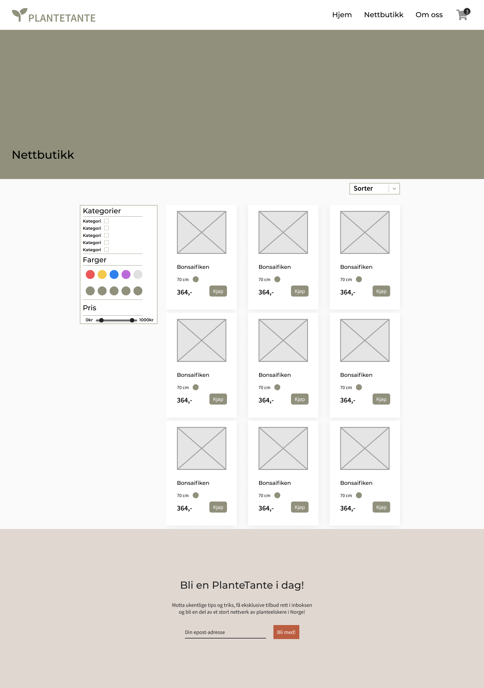

P2 Design
Andreas, Anna, Diana, Magnus og Vilde
Administrative detaljer
Klient: Georgine Blom
Kontaktperson: Diana Bjørkhaug
Vår klient er Georgine Blom, eier og daglig leder i PlanteTante. Hun deler sin interesse for planteliv med Diana og de kom først kontakt over Instagram. De ble fort enige om mangelen på utsalg av planter og utstyr for alle som er over middels interessert i plantevelferd. Disse samtalene resulterte i Georgines ønske og drøm om å starte nettopp en slik butikk selv. Vi skal da lage en nettside for å realisere Georgines drøm.
Formål og målgruppe
Formålet med prosjektet er å tilby en nettbutikk med mer eksotiske plantearter og utstyr enn de som selges på tilsvarende butikker man ellers finner i byen. Målet med PlanteTante er derfor å lage en innbydende og informativ nettside for såkalte ‘plantefanatikere’. Videre vil nettbutikken inneholde kompostjord, hygrometer, og annet utstyr en plantefanatiker må ha i sitt arsenal. Nettsiden skal også inneholde flere artikler om stell av planter slik at man alltid kan fordype seg i temaet.
Målgruppen for hjemmesiden er folk som er over middels interessert i planter. Dette er personer som vil gi noe mer til plantene enn vanlig jord og lecakuler. Vi snakker personer som bruker kompostjord, sand, hygrometer og luftfukter. Det å bry seg mer om plantenes behov er en økende trend og målgruppen blir større og større. Likevel er det fortsatt en utfordring å få tak i mange av disse produktene, både i butikk og på nett. Dette vil PlanteTante gjøre noe med, ved å samle alt på en plass i nettbutikken. I tillegg ønsker hun å bidra til økt kunnskap om planter og vil derfor inkludere artikler på hjemmesiden.
Navigasjonsstruktur
Navigasjonsstrukturen kan beskrives som hierarkisk. Vi har ikke veldig mange sider, så det er ikke et veldig avansert mønster det er snakk om her.
Fra hjemmesiden kan man navigere seg til nettbutikken/index og kontakt/om oss siden. Disse to sidene i tillegg til hjemmesiden kan man trykke seg inn på via navbaren på toppen, uansett hvor man er på nettsiden. Med knapper til alle disse nettsidene på en felles header, blir det intuitivt for brukeren å navigere seg rundt, og man kommer mindre sannsynlig på villspor.
I nettbutikken kan man også klikke seg inn på produktsiden til varen man vil se på. Det er også et utvalg av varer på hjemmesiden, og forslag til andre varer på produktsiden som man videre kan gå inn på.
Man kommer seg til handlekurven ved å trykke på ikonet øverst til høyre uansett hvilken side man er på. Via handlekurven kommer man videre inn til checkout, hvor man legger inn informasjon og betaler for produktet.
Layout og Utseende
Fonter
-
Header: Montserrat
- H1: 38 px
- H2: 34 px
- H3: 24 px
- H4: 14 px
- H5: 12 px
-
Paragrafer: Source Sans Pro
- P0: 24 px
- P1: 18 px
- P2: 12 px
Farger
-
Tekst:
- Primær: Karbon
- Sekundær: Grå
-
Bakgrunn:
- Primær: Beige
- Sekundær: Kvarts
- Footer og bestillingsoversikt: Lysebrun
-
Linker:
- Base: Grønn
- Hover: Lysegrønn
-
Knapper:
- Base: Grønn
- Hover: Lysegrønn
- Alternativ: Oransje
-
Skygger:
- Det er skygger bak bildene i nettbutikken, bak feltet med Totalsum i handlekurven, og bak Bestillingsoversikt i handlekurven og ordreoversikten.
Body bredde: 1100px
Linker: Nettsidens logo vil være en link tilbake til hovedsiden på alle undersidene. Menyen i toppen av siden vil kunne navigere besøkende til de forskjellige undersidene og drop-down-menyen på ‘Om oss’ vil ha interne linker på undersiden.
Navbar: Navbaren vil ligge fast i toppen av nettleservinduet og ha linker til alle undersidene i tillegg til en drop-down-meny
Banner på hver av sidene er et bilde av en grønn plante med tilhørende undersidetittel.
Footer: Dette feltet vil inneholde et påmeldingsfelt for butikkens medlemsklubb, i tillegg til link til SoMe.
Bakgrunnen vil være en nesten hvit farge, fargekode: #F0EFED. Butikkens logo vil hele tiden ligge øverst i venstre hjørne i menyen og består av teksten ‘PlanteTante’ med en spire til venstre.
Innhold
Index
Dette er hjemsiden første side man kommer inn på først. Den vil ikke inneholde selve nettbutikken, men ha en seksjon med noen utvalgte produkter. Det vil som på alle de andre sidene være en navigasjonsmeny som linker videre til de andre undersidene. I tillegg det være en seksjon med en "testimonial slider" som inneholder sitater fra andre planteelskere.
Kontakt/Om oss
‘Om oss’-siden vil inneholde praktisk informasjon om grunnlegger Georgine Blom og butikken, den vil ha en oversikt over åpningstider, kontaktinformasjon og et kartutsnitt som viser hvor butikken ligger. I menyen vil en dropdown vises når musepekeren er over ‘Om oss’ som vil ta den besøkende til den delen av siden med samme overskrift, eksempelvis ‘Kontakt’. Nederst på siden vil det være en footer lik de andre sidene.
Nettbutikk - Oversikt
Nettbutikk Oversikt vil inneholde alle varene i sortimentet til butikken. Det skal ikke være mye unødvendig informasjon her, og det skal være klart at varene er i sentrum. Det skal være klare bilder av produktene, navn på produktene, priser og mulig litt ekstra informasjon om den spesifikke varen.
Denne siden skal altså gi en oversikt over varene, la deg sortere på litt ulike måter og filtrere varer ut i fra hva man er på utkikk etter. Man kan filtrere ut i fra noen kategorier, så da kommer det ann på om man skal vil finne en spesifikk type plante eller noe annet utstyr. Disse filtreringsmulighetene er organisert gjennom en sidebar til venstre for varene. I tillegg til ulike kategorier er det her mulighet for å inkludere filtreringer som f.eks. pris-slider eller farger på planter. Med en pris-slider skal en få oversikt over spesifikt de varene innenfor det de er villig å bruke. Denne typen sidebar ser man i mange store nettbutikker, så man kan tenke seg at en bruker som har handlet på nett før er kjent med designet.
Her kan man også legge varer til i handlekurven, eller trykke seg inn på produktsiden til varen. Har man bestemt seg for en vare, trenger man altså ikke unødvendig mange trykk ved å måtte gå inn på produktsiden.
Nettbutikk - Produkt
Denne siden viser enkelte produkt i nettbutikken. Du kommer inn på siden ved å trykke på et produkt-kort fra forsiden eller oversikten til nettbutikken. Siden skal være enkel, men samtidig gi brukeren mer informasjon om produktet. Målet med siden er at brukeren skal trykke “legg til i handlekurv”, derfor skal denne knappen være godt synlig og plassert på en hensiktsmessig måte. I tillegg til produktet kunden har klikket seg inn på vises “andre produkter”. Dette for å skape en sømløs opplevelse i nettbutikken og generere flere kjøp. Brukeren har også alltid mulighet til å gå tilbake til oversikten med alle produktene.
Nettbutikk - Handlekurv
Man kommer til denne siden ved å klikke på handlevognikonet i headeren. Denne siden viser altså hva en har lagt til i handlekurven. Her kan man velge å legge til eller fjerne flere utgaver av samme produkt.
Øverst på siden (men under headeren) vil det være en overskrift som viser antall varer i handlekurven.
I tillegg skal det være en boks som viser oversikt over totalsum i handlekurven. I denne oversikten kan man klikke “gå til kasse” for å komme til ordreoversikten, eller klikke “tilbake til nettbutikken” for å handle mer. Denne boksen skal alltid være i bunnen av siden, men over den faktiske footeren hvis brukeren scroller helt ned.
Nettbutikk - Ordreoversikt
Når en er ferdig med å legge til varer i handlekurven, og en trykker “Gå til kasse”, kommer en til ordreoversikten. Her fyller en ut kontaktinformasjon, og velger leveringsmetode og betalingsmetode. På høyre siden vil en også kunne se en oversikt over hva som ligger i handlekurven, og hvor mye frakt og totalsum blir.
I og med at vi ikke har lært om hvordan vi skal lage fungerende betalingsløsninger, vil ikke denne siden være fullt funksjonell. Dette er grunnen til at det på alle betalingsalternativene (Kort, PayPal, Klarna og Vipps) står den samme meldingen: “Etter å ha klikket “Fullfør bestilling”, blir du omdirigert til NETS for å fullføre kjøpet ditt på en sikker måte.” der NETS blir byttet ut med PayPal, Klarna eller Vipps alt etter hvilket betalingsalternativ du har valgt. Når en trykker “Fullfør bestilling” skal det komme opp et pop-up vindu der det står “Kjøp gjennomført”.
Minimumskriterier
Vi planlegger å ha fem JavaScript dokumenter. Nettsiden vil inneholde flere JavaScript applikasjoner enn det, men de vil hovedsakelig være inne i de nevnte dokumentene. Under er en forklaring på hva disse funksjonene skal gjøre og hvem som har hovedansvaret for de. En oversikt finnes i seksjonen 'Plan'.
Vilde vil ha ansvar for navbar.js og footer.js. Begge disse dokumentene er skrevet med JavaScript på grunn av at de skal være lik på alle sidene. Navbaren skal være en dropdown-meny. Footeren skal inneholde en påmelding til nyhetsbrev. Når en trykker på “Bli med!”, kommer det et popup-vindu opp med en tekst som bekrefter påmeldingen.
Andreas vil ha ansvaret for: produkt.js. Her er det mange produkter med lik styling, og da brukes javascript for å laste disse repeterende produktblokkene, i stedet for å skrive samme kode mange ganger. Dette gjelder altså for nettbutikken. Filen skal også sørge for å filtrere varer riktig i forhold til hvilke filter man velger på nettbutikken.
Diana og Magnus vil ha ansvaret for: ordreoversikt.js. Her bruker vi JavaScript for å oppdatere prisen i bestillingsoversikten basert på valgt leveringsmetode. Vi bruker også JavaScript der en velger betalingsmetode, da det kun skal være et vindu åpent om gangen som viser en forklarende tekst i forhold til valgt betalingsmetode. På denne siden vil det også være et popup-vindu med en tekst som bekrefter at kjøpet er gjennomført.
Anna og Magnus vil ha ansvaret for: handlekurv.js. Dette scriptet skal inneholde funksjoner for å legge til og fjerne produkter av samme type i handlekurven. I tillegg skal den inneholde en funksjon som kalkulerer en totalpris av alle varene.
Plan
Mappehierarki
- index.html
- kontakt.html
- nettbutikk_oversikt.html
- nettbutikk_prodult.html
- nettbutikk_handlekurv.html
- nettbutikk_ordreoversikt.html
- style.css
-
img/
- favicon.png
- andre bilder på nettsiden
-
scripts/
- navbar.js
- footer.js
- produkt.js
- handlekurv.js
- ordreoversikt.js
Arbeidsskjema
| FILNAVN | BESKRIVELSE | ANSVARLIG | FRIST |
|---|---|---|---|
| index.html | Forsiden | Magnus | 15.oktober |
| nettbutikk_oversikt.html | Oversikt over varer i nettbutikken | Andreas | 15.oktober |
| nettbutikk_produkt.html | Et testprodukt med info | Magnus | 15.oktober |
| nettbutikk_handlekurv.html | Oversikt over varer brukeren har lagt i handlekurven. | Anna | 15.oktober |
| nettbutikk_ordreoversikt.html | Side for å skrive inn adresse, metode for levering, og legge inn betalingsinformasjon. Knapp for “Bekreft betaling” | Diana | 15.oktober |
| om_oss.html | “Om oss” og “Kontakt oss” | Vilde | 15.oktober |
| navbar.js | En drop-downmeny i headeren | Vilde | 25.oktober |
| footer.js | Nettsidens footer | Vilde | 25.oktober |
| produkt.js | Produktene vi har på nettbutikken | Andreas | 25.oktober |
| ordreoversikt.js | Kontaktinformasjon, leveringsmetode og betalingsmetode | Diana | 25.oktober |
| handlekurv.js | Fjerne/legge til flere av samme produkt, priskalkulator | Anna | 25.oktober |
| style.css | CSS-filen som inneholder stilsettet av hjemmesiden. | Alle | 15.oktober |
| Sende ut til testing | Lage en Google Forms som linker til hjemmesida. | Alle | 26.oktober |